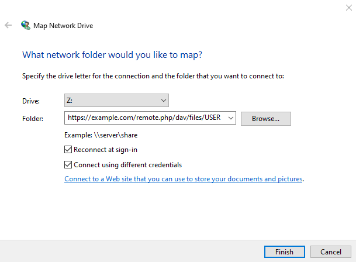

WebDAV를 통해 Nextcloud 파일에 접근하기
Nextcloud fully supports the WebDAV protocol, and you can connect to and synchronize with Nextcloud Files over WebDAV. This chapter explains how to connect Linux, macOS, Windows, and mobile devices to your Nextcloud server.
WebDAV는 분산 저작 및 버전 관리의 약자입니다. 이는 원격 웹 서버에 호스팅된 파일을 쉽게 생성, 읽기 및 편집할 수 있도록 해주는 HTTP 확장 기능입니다. WebDAV 클라이언트를 사용하면 Linux, macOS 및 Windows에서 Nextcloud 파일(공유 폴더 포함)에 원격 네트워크 공유처럼 접근하고 동기화 상태를 유지할 수 있습니다.
Before you configure WebDAV, review the recommended way to connect client devices to Nextcloud.
Nextcloud 공식 데스크탑 및 모바일 클라이언트
Nextcloud 서버와 컴퓨터를 동기화하는 가장 좋은 방법은 공식 Nextcloud 동기화 클라이언트(<https://nextcloud.com/install/#install-clients>)를 사용하는 것입니다. 클라이언트를 구성하여 로컬 디렉터리에 파일을 저장할 수 있으며, Nextcloud 서버에서 동기화할 디렉터리를 선택할 수도 있습니다. 클라이언트는 현재 연결 상태를 표시하고 모든 활동을 기록하므로, 어떤 원격 파일이 PC로 다운로드되었는지 항상 확인할 수 있으며, 로컬 PC에서 생성 및 업데이트된 파일이 서버와 제대로 동기화되었는지 검증할 수 있습니다.
Android 및 Apple iOS 기기와 동기화하는 가장 권장되는 방법은 `Nextcloud 공식 모바일 앱<https://nextcloud.com/install/>`_입니다.
Nextcloud 공식 앱에 인스턴스의 주소를 입력하면, 앱과 서버를 연결할 수 있습니다. - e.g.;;
https://cloud.example.com
Nextcloud가 “nextcloud”라는 하위 디렉토리에 설치된 경우:
https://example.com/nextcloud
기타 서드파티 WebDAV 클라이언트
사용자의 선호에 따라 WebDAV를 지원하는 서드파티 클라이언트로 컴퓨터와 Nextcloud 서버를 연결할 수 있습니다. (운영체제의 기본 기능도 이에 해당할 수 있습니다).
모바일 환경에서도 WebDAV를 지원하는 서드파티 앱을 통해 Nextcloud와 연결할 수 있습니다.
서드파티 클라이언트 사용시 Nextcloud 및 제반 기능이 최적화되지 않을 수도 있다는 점을 유의해 주십시오.
Nextcloud 커뮤니티 구성원들은 주로 다음과 같은 모바일 클라이언트를 사용합니다:
서트파티 앱 설정용 URL은 공식 클라이언트용 URL보다 조금 깁니다:
https://cloud.example.com/remote.php/dav/files/USERNAME/
Nextcloud가 “nextcloud”라는 하위 디렉토리에 설치된 경우:
https://example.com/nextcloud/remote.php/dav/files/USERNAME/
참고
When using a third-party WebDAV client (including your operating system’s built-in client), you should use an application password for login rather than your regular password. In addition to improved security, this increases performance significantly. To configure an application password, log in to the Nextcloud Web interface, click your avatar, and choose Personal settings. Then choose Security in the left sidebar and scroll to the very bottom. There you can create an app password (which can also be revoked in the future without changing your main user password).
참고
이하 예시에서, example.com/nextcloud 주소를 해당 Nextcloud 서버 주소로 변경해야 합니다. (이때 Nextcloud가 도메인의 루트와 연결될 경우 해당 부분은 생략하십시오). USERNAME 또한 사용자의 아이디(사용자 이름)로 변경하십시오.
You can find the WebDAV URL in Files settings under WebDAV in your Nextcloud account.

Linux를 통해 파일에 접근하기
다음의 방법을 통해 Linux 운영체제에서 파일에 접근할 수 있습니다.
Nautilus 파일 매니저
When you configure your Nextcloud account in the GNOME Control Center, your files will automatically be mounted by Nautilus as a WebDAV share, unless you deselect file access.
Nextcloud 파일을 수동으로 마운트 할 수도 있습니다. davs:// 프로토콜을 이용해 Nautilus 파일 관리자와 Nextcloud 공유를 연결하십시오.
davs://example.com/nextcloud/remote.php/dav/files/USERNAME/

참고
MATE의 Caja 및 Cinnamon의 Nemo 등 GVFS를 사용하는 다른 파일 관리자에서도 동일한 방법으로 사용할 수 있습니다.
Accessing files with KDE and Dolphin
시스템 설정 -> 네트워킹 -> 온라인 계정으로 이동합니다.
“계정 추가…”를 클릭합니다.
Nextcloud를 클릭합니다.
서버 주소를 입력하세요
화면의 지시에 따라 로그인합니다.
로그인 후 “이 계정 사용” 섹션에서 “저장소”를 활성화했는지 확인하세요
이제 사이드바의 “네트워크”에서 Dolphin의 파일에 액세스할 수 있습니다.
(Optional) To add this location as a shortcut in the sidebar, right-click “Nextcloud Storage”, then click “Add to Places”
(Optional) To customize the shortcut, right-click it in the sidebar, then click “Edit…” and customize the icon and label
Linux 명령줄에서 WebDAV 마운트 생성
Linux 명령줄에서 WebDAV 마운트를 생성할 수 있습니다. 이는 다른 원격 파일 시스템 마운트와 동일한 방식으로 Nextcloud에 액세스하려는 경우에 유용합니다. 다음 예제에서는 개인 마운트를 생성하고 Linux 컴퓨터에 로그인할 때마다 자동으로 마운트하는 방법을 보여줍니다.
다른 원격 파일 시스템과 마찬가지로 WebDAV 공유를 마운트할 수 있는 ‘’davfs2’’ WebDAV 파일 시스템 드라이버를 설치합니다. 이 명령을 사용하여 Debian/Ubuntu에 설치합니다.
apt-get install davfs2
CentOS, Fedora 및 openSUSE에 설치하려면 다음 명령을 사용합니다:
yum install davfs2
‘’davfs2’’ 그룹에 당신을 추가하세요
usermod -aG davfs2 <username>
그런 다음, 홈 디렉터리에 마운트 지점을 위한 nextcloud 디렉터리를 만들고, 개인 설정 파일을 위한 .davfs2/ 디렉터리를 생성하십시오:
mkdir ~/nextcloud mkdir ~/.davfs2
‘’/etc/davfs2/secrets’’를 ‘’~/.davfs2’’에 복사합니다.
cp /etc/davfs2/secrets ~/.davfs2/secrets
자신을 소유자로 설정하고, 권한을 소유자만 읽기-쓰기 가능하도록 지정하십시오:
chown <linux_username>:<linux_username> ~/.davfs2/secrets chmod 600 ~/.davfs2/secrets
Nextcloud 서버 URL과 Nextcloud 사용자 이름 및 비밀번호를 사용하여 ‘’secrets’’ 파일 끝에 Nextcloud 로그인 자격 증명을 추가합니다.
https://example.com/nextcloud/remote.php/dav/files/USERNAME/ <username> <password> or $PathToMountPoint $USERNAME $PASSWORD for example /home/user/nextcloud john 1234
마운트 정보를 ‘’/etc/fstab’’에 추가합니다.
https://example.com/nextcloud/remote.php/dav/files/USERNAME/ /home/<linux_username>/nextcloud davfs user,rw,auto 0 0
그런 다음, 다음 명령을 실행하여 마운트 및 인증이 정상적으로 동작하는지 테스트하십시오. 올바르게 설정했다면 루트 권한이 필요하지 않습니다:
mount ~/nextcloud
또한 이를 마운트 해제할 수도 있어야 합니다:
umount ~/nextcloud
이제 Linux 시스템에 로그인할 때마다 Nextcloud 공유가 WebDAV를 통해 ‘’~/nextcloud’’ 디렉토리에 자동으로 마운트됩니다. 수동으로 마운트하려면 ‘’/etc/fstab’’에서 ‘’auto’’를 ‘’noauto’’로 변경하십시오.
알려진 문제
문제
리소스를 일시적으로 사용할 수 없음
솔루션
디렉토리에 파일을 만들 때 문제가 발생하면 ‘’/etc/davfs2/davfs2.conf’’를 편집하고 다음을 추가하십시오.
use_locks 0
문제
인증서 경고
솔루션
자체 서명된 인증서를 사용하는 경우 경고가 표시됩니다. 이를 변경하려면 인증서를 인식하도록 ‘’davfs2’’를 구성해야 합니다. ‘’mycertificate.pem’’을 ‘’/etc/davfs2/certs/’’에 복사합니다. 그런 다음 ‘’/etc/davfs2/davfs2.conf’’를 편집하고 ‘’servercert’’ 줄의 주석 처리를 제거합니다. 이제 다음 예와 같이 인증서의 경로를 추가합니다.
servercert /etc/davfs2/certs/mycertificate.pem
macOS를 사용하여 파일 액세스
참고
The macOS Finder suffers from a series of implementation problems and should only be used if the Nextcloud server runs on Apache and mod_php, or Nginx 1.3.8+. Alternative macOS-compatible clients capable of accessing WebDAV shares include open source apps like Cyberduck (see instructions here) and Filezilla. Commercial clients include Mountain Duck, Forklift, Transmit, and Commander One.
macOS Finder를 통해 파일에 접근하려면,

Microsoft Windows를 사용하여 파일 액세스
WebDAV의 기본 Windows 구현을 사용하는 경우 Windows 탐색기를 사용하여 Nextcloud를 새 드라이브에 매핑할 수 있습니다. 드라이브에 매핑하면 매핑된 네트워크 드라이브에 저장된 파일을 탐색하는 방식으로 Nextcloud 서버에 저장된 파일을 탐색할 수 있습니다
이 기능을 사용하려면 네트워크 연결이 필요합니다. 파일을 오프라인으로 저장하려면 데스크톱 클라이언트를 사용하여 Nextcloud의 모든 파일을 로컬 하드 드라이브의 하나 이상의 디렉토리에 동기화하십시오.
참고
In Windows 10, Basic Authentication is allowed by default when HTTPS is enabled before mapping your drive.
이전 버전의 Windows에서는 Windows 레지스트리에서 기본 인증 사용을 허용해야 합니다.
‘’regedit’’를 실행하고 ‘’HKEY_LOCAL_MACHINESYSTEMCurrentControlSetServicesWebClientParameters’’로 이동합니다.
‘’BasicAuthLevel’’(Windows Vista, 7 및 8) 또는 ‘’UseBasicAuth’’(Windows XP 및 Windows Server 2003), ‘’DWORD’’ 값을 만들거나 편집하고 SSL 연결의 경우 해당 값 데이터를 ‘’1’’으로 설정합니다. ‘’0’’ 값은 기본 인증이 비활성화되었음을 의미하고 ‘’2’’ 값은 SSL 및 비 SSL 연결을 모두 허용합니다(권장되지 않음).
그런 다음 레지스트리 편집기를 종료하고 컴퓨터를 다시 시작합니다.
명령줄을 사용하여 드라이브 매핑
다음 예제에서는 명령줄을 사용하여 드라이브를 매핑하는 방법을 보여 줍니다. 드라이브를 매핑하려면:
Windows에서 명령 프롬프트를 엽니다.
명령 프롬프트에 다음 줄을 입력하여 컴퓨터 Z 드라이브에 매핑합니다.
net use Z: https://<drive_path>/remote.php/dav/files/USERNAME/ /user:youruser yourpassword
Nextcloud 서버에 대한 URL로 <drive_path>을 사용합니다. 예를 들어:
net use Z: https://example.com/nextcloud/remote.php/dav/files/USERNAME/ /user:youruser yourpassword
컴퓨터는 Nextcloud 계정의 파일을 드라이브 문자 Z에 매핑합니다.
오류
다음 오류 ‘’시스템 오류 67이 발생했습니다. 네트워크 이름을 찾을 수 없습니다.’’ 가 발생하거나, 또는 연결이 자주 끊어지는 경우 서비스 앱을 열고 ‘’WebClient’’ 서비스가 실행 중이고 시작 시 자동으로 시작되는지 확인합니다.
참고
권장되지는 않지만 HTTP를 사용하여 Nextcloud 서버를 마운트하고 연결을 암호화하지 않은 상태로 둘 수도 있습니다.
공공 장소에 있는 동안 장치에서 HTTP 연결을 사용하려는 경우 필요한 보안을 제공하기 위해 VPN 터널을 사용하는 것이 좋습니다.
대체 명령 구문은 다음과 같습니다.
net use Z: \\example.com@ssl\nextcloud\remote.php\dav /user:youruser
yourpassword
Windows 탐색기를 사용하여 드라이브 매핑
Microsoft Windows 탐색기를 사용하여 드라이브를 매핑하려면:
MS Windows 컴퓨터에서 Windows 탐색기를 엽니다.
컴퓨터 항목을 마우스 오른쪽 버튼으로 클릭하고 드롭다운 메뉴에서 **네트워크 드라이브 매핑…**을 선택합니다.
Nextcloud를 매핑할 로컬 네트워크 드라이브를 선택합니다.
Nextcloud 인스턴스의 주소를 지정한 다음 **/remote.php/dav/files/USERNAME/**를 지정합니다.
예를 들어:
https://example.com/nextcloud/remote.php/dav/files/USERNAME/
참고
SSL로 보호된 서버의 경우 **로그인 시 다시 연결**을 선택하여 후속 재부팅 시 매핑이 지속되는지 확인합니다. Nextcloud 서버에 다른 사용자로 연결하려면 **다른 자격 증명을 사용하여 연결**을 선택합니다.

‘마침’ 버튼을 클릭합니다.
{kind=link}
Windows 탐색기는 네트워크 드라이브를 매핑하여 Nextcloud 인스턴스를 사용할 수 있도록 합니다.
Cyberduck을 사용하여 파일에 액세스
‘Cyberduck <https://cyberduck.io/>’_는 macOS 및 Windows에서 파일 전송을 위해 설계된 오픈 소스 FTP, SFTP, WebDAV, OpenStack Swift 및 Amazon S3 브라우저입니다.
참고
이 예에서는 Cyberduck 버전 4.2.1을 사용합니다.
Cyberduck을 사용하려면:
선행 프로토콜 정보가 없는 서버를 지정합니다.
예: ‘’example.com’’
적절한 포트를 지정합니다.
선택하는 포트는 Nextcloud 서버가 SSL을 지원하는지 여부에 따라 다릅니다. SSL을 사용하려는 경우 Cyberduck을 사용하려면 다른 연결 유형을 선택해야 합니다.
- 예를 들어:
암호화되지 않은 WebDAV의 경우 ‘’80’’
보안 WebDAV(HTTPS/SSL)를 위한 ‘’443’’
‘추가 옵션’ 드롭다운 메뉴를 사용하여 WebDAV URL의 나머지 부분을 ‘경로’ 필드에 추가합니다.
예: ‘’remote.php/dav/files/USERNAME/’’
이제 Cyberduck은 Nextcloud 서버에 대한 파일 액세스를 가능하게 합니다.
알려진 문제
문제
Windows는 HTTPS를 사용하여 연결하지 않습니다.
해결 방법 1
Windows WebDAV 클라이언트는 암호화된 연결에서 SNI(서버 이름 표시)를 지원하지 않을 수 있습니다. SSL로 암호화된 Nextcloud 인스턴스를 마운트하는 동안 오류가 발생하면 SSL 기반 서버에 전용 IP 주소 할당에 대해 공급자에게 문의하십시오.
해결 방법 2
Windows WebDAV 클라이언트는 TLSv1.1 및 TLSv1.2 연결을 지원하지 않을 수 있습니다. TLSv1.1 이상만 제공하도록 서버 구성을 제한한 경우 서버에 대한 연결이 실패할 수 있습니다. 자세한 내용은 WinHTTP 설명서를 참조하십시오.
문제
오류 0x800700DF: 파일 크기가 허용된 제한을 초과하여 저장할 수 없습니다. 오류 메시지가 표시됩니다.
솔루션
Windows는 WebDAV 공유에서 또는 WebDAV 공유로 전송된 파일의 최대 크기를 제한합니다. **수정**을 클릭하여 ‘’HKEY_LOCAL_MACHINE\SYSTEM\CurrentControlSet\Services\WebClient\Parameters’’에서 ‘’FileSizeLimitInBytes’’ 값을 늘릴 수 있습니다.
제한을 최대값인 4GB로 늘리려면 10진수**를 선택하고 ‘’4294967295’’ 값을 입력한 다음 Windows를 다시 부팅하거나 **WebClient 서비스를 다시 시작합니다.
문제
Adding a WebDAV drive on Windows with the steps above does not display the correct available Nextcloud space and instead shows the size and free space of the C: drive.
응답
Unfortunately, this is a limitation of WebDAV itself, because it does not provide a way for the client to retrieve available free space from the server. Windows automatically falls back to the size and free space of the C: drive. There is no direct solution for this limitation.
문제
WebDAV를 통해 Microsoft Office에서 파일에 액세스하지 못합니다.
솔루션
알려진 문제점과 해결 방법은 KB2123563 문서에 설명되어 있습니다.
문제
자체 서명된 인증서를 사용하여 Windows에서 Nextcloud를 WebDAV 드라이브로 매핑할 수 없습니다.
솔루션
Access your Nextcloud instance in your preferred Web browser.
브라우저 상태 줄에 인증서 오류가 나타날 때까지 클릭합니다.
인증서를 본 다음 세부 정보 탭에서 ‘파일에 복사’를 선택합니다.
임의의 이름(예: ‘’myNextcloud.pem’’)으로 파일을 데스크탑에 저장합니다.
시작 메뉴 > 실행으로 이동하여 MMC를 입력하고 ‘확인’을 클릭하여 Microsoft Management Console을 엽니다.
파일 > 스냅인 추가/제거로 이동합니다.
인증서를 선택하고 ‘추가’를 클릭한 다음 ‘내 사용자 계정’을 선택한 다음 ‘마침’을 선택하고 마지막으로 ‘확인’을 선택합니다.
신뢰할 수 있는 루트 인증 기관의 인증서 항목으로 들어가십시오.
인증서를 마우스 오른쪽 단추로 클릭하고 모든 작업을 선택한 다음 가져옵니다.
데스크톱에서 저장된 인증서를 선택합니다.
다음 저장소에 모든 인증서 배치를 선택하고 찾아보기를 클릭합니다.
물리적 저장소 표시 상자를 선택하고 신뢰할 수 있는 루트 인증 기관을 확장한 다음 로컬 컴퓨터를 선택하고 ‘확인’을 클릭하고 가져오기를 완료합니다.
목록을 확인하여 인증서가 표시되는지 확인합니다. 표시되기 전에 새로 고침이 필요할 것입니다.
MMC를 종료합니다.
Firefox 사용자의 경우:
브라우저를 실행하고 응용 프로그램 메뉴 > 기록 > 최근 기록 지우기…
‘지울 시간 범위’ 드롭다운 메뉴에서 ‘모든 것’을 선택합니다.
‘활성 로그인’ 확인란을 선택합니다.
‘지금 지우기’ 버튼을 클릭합니다.
브라우저를 닫은 다음 다시 열고 테스트합니다.
Chrome 기반 브라우저(Chrome, Chromium, Microsoft Edge) 사용자의 경우:
Windows 제어판을 열고 인터넷 옵션으로 이동합니다.
콘텐츠 탭에서 SSL 상태 지우기 버튼을 클릭합니다.
브라우저를 닫은 다음 다시 열고 테스트합니다.
cURL을 사용하여 파일 액세스
WebDAV는 HTTP의 확장이므로 cURL을 사용하여 파일 작업을 스크립팅할 수 있습니다.
참고
설정 → 관리 → 공유 → 이 서버의 사용자가 다른 서버로 공유를 보낼 수 있도록 허용. 이 옵션을 비활성화하면 ‘’–header “X-Requested-With: XMLHttpRequest”’’ 옵션을 cURL에 전달해야 합니다.
현재 날짜를 이름으로 사용하여 폴더를 만들려면:
$ curl -u user:pass -X MKCOL "https://example.com/nextcloud/remote.php/dav/files/USERNAME/$(date '+%d-%b-%Y')"
해당 디렉토리에 ‘’error.log’’ 파일을 업로드하려면:
$ curl -u user:pass -T error.log "https://example.com/nextcloud/remote.php/dav/files/USERNAME/$(date '+%d-%b-%Y')/error.log"
파일을 이동하려면:
$ curl -u user:pass -X MOVE --header 'Destination: https://example.com/nextcloud/remote.php/dav/files/USERNAME/target.jpg' https://example.com/nextcloud/remote.php/dav/files/USERNAME/source.jpg
루트 폴더에 있는 파일의 속성을 가져오려면:
$ curl -X PROPFIND -H "Depth: 1" -u user:pass https://example.com/nextcloud/remote.php/dav/files/USERNAME/ | xml_pp
<?xml version="1.0" encoding="utf-8"?>
<d:multistatus xmlns:d="DAV:" xmlns:oc="http://nextcloud.org/ns" xmlns:s="http://sabredav.org/ns">
<d:response>
<d:href>/nextcloud/remote.php/dav/files/USERNAME/</d:href>
<d:propstat>
<d:prop>
<d:getlastmodified>Tue, 13 Oct 2015 17:07:45 GMT</d:getlastmodified>
<d:resourcetype>
<d:collection/>
</d:resourcetype>
<d:quota-used-bytes>163</d:quota-used-bytes>
<d:quota-available-bytes>11802275840</d:quota-available-bytes>
<d:getetag>"561d3a6139d05"</d:getetag>
</d:prop>
<d:status>HTTP/1.1 200 OK</d:status>
</d:propstat>
</d:response>
<d:response>
<d:href>/nextcloud/remote.php/dav/files/USERNAME/welcome.txt</d:href>
<d:propstat>
<d:prop>
<d:getlastmodified>Tue, 13 Oct 2015 17:07:35 GMT</d:getlastmodified>
<d:getcontentlength>163</d:getcontentlength>
<d:resourcetype/>
<d:getetag>"47465fae667b2d0fee154f5e17d1f0f1"</d:getetag>
<d:getcontenttype>text/plain</d:getcontenttype>
</d:prop>
<d:status>HTTP/1.1 200 OK</d:status>
</d:propstat>
</d:response>
</d:multistatus>
WinSCP를 사용하여 파일 액세스
WinSCP is a free, open-source SFTP, FTP, WebDAV, S3, and SCP client for Windows. Its main function is file transfer between a local and a remote computer. WinSCP also offers scripting and basic file management functionality.
WinSCP의 휴대용 버전을 ‘다운로드’<https://winscp.net/eng/downloads.php/> ‘하고 Wine <https://wiki.winehq.org/Main_Page/>’_을 통해 Linux에서 실행할 수 있습니다.
To run WinSCP on Linux, install Wine through your distribution’s package manager,
then run: wine WinSCP.exe.
Nextcloud에 연결하려면:
WinSCP 시작
메뉴에서 ‘세션’을 누릅니다.
‘새 세션’ 메뉴 옵션을 누릅니다.
‘파일 프로토콜’ 드롭다운을 WebDAV로 설정
‘암호화’ 드롭다운을 TLS/SSL 암시적 암호화로 설정합니다.
호스트 이름 필드에 ‘’example.com’’을 입력합니다.
사용자 이름 필드를 입력하십시오: ‘’NEXTCLOUDUSERNAME’’
비밀번호 필드를 입력합니다: ‘’NEXTCLOUDPASSWORD’’
‘고급…’ 버튼을 누릅니다.
왼쪽의 ‘환경’, ‘디렉토리’로 이동합니다.
‘원격 디렉토리’ 필드에 다음을 입력하십시오: ‘’/nextcloud/remote.php/dav/files/NEXTCLOUDUSERNAME/’’
‘확인’ 버튼을 누르십시오.
‘저장’ 버튼을 누르십시오.
원하는 옵션을 선택하고 ‘확인’ 버튼을 누릅니다.
‘로그인’ 버튼을 눌러 Nextcloud에 연결하세요.
참고
If you use TOTP, use an app password. At the time of writing (2022-11-07), WinSCP does not support TOTP with Nextcloud.